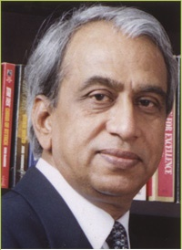
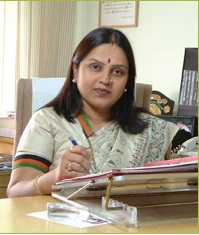

Mahatma Gandhi Mission, that started its journey in a modest way with a rural healthcare center at Nila and a hospital in Nanded, has emerged as a 5000-member family with more than 50 educational institutions, health-care centers and social-welfare units functioning under its umbrella at 5 centers i.e. Aurangabad, Nanded, Navi Mumbai, Noida and Parbhani. Spanning a period of 35 years, MGM establishments prove the deep faith of her management in the power of education that leads the society towards prosperity of the Nation. Mahatma Gandhi Mission has endeavored providing value-based education in all streams of knowledge like Engineering, Medicine, Dental, Nursing, Management, Law, Mass Communication & Journalism, Library Science, Computer Science, Biotechnology, Bioinformatics, Fine Art, Indian classical dance with state-of-the-art technology and infrastructure. Many new disciplines have also been included in the chain of establishments preserving the old. MGM’s University of Health Sciences has begun with exploring the new possibilities of imparting quality education. The founders of the trust are a group of ingenious Engineers, Doctors and Scientists having a high Career-profile and commitment to social interest. The Board of Management of the Trust is headed by Shri Kamalkishor N. Kadam, Member of Legislative Council of State of Maharashtra and Ex-minister of education.
| Chairman's Desk | ||
|---|---|---|
| We recognize that choosing your institution is one of the most important decision you make in your life. Mahatma Gandhi Mission aims for providing you with a distinctive combination of academic excellence with professional relevance laying foundation for total personality development. Today, MGM is one of the leading educational institution in Maharashtra. In Dec. 2015, MGM completed her 32 years of existence offering her contribution in the field of education and health services to the society. Providing health care services is MGM’S prime activity widely spread over with medical, dental, nursing colleges & multispeciality hospitals. MGM’S University of Health Sciences is the new milestone of achievement. In all MGM Institutions students are our top priority and their educational and social needs are at the heart of the MGM plannings. A dynamic academic environment promises you exciting & fulfilling student life. We believe in continuous upgradation of infrastructural facilities along with quality improvement program for faculty and enhancement of work environment in all respects. Our teaching standards are consistently rated amongst the best. qualified & dedicated faculty is our strength. Our high educational standards are reflected in the excellent response we receive from the achievements of our alumni having well received in organizations of repute worldwide. We are aware that success is no destination, it is a continuous journey. I am thankfull to all those parents who put in their valuable trust with us giving opportunity to contribute for the career development of their children. With all my best wishes to all of you for the endeavor you have taken. |
 | |
| Director's Desk | Being associated with this Institute since last 35 years and being the Principal, this institute carries a very special place in my heart. Recognized as one of the best options to go for engineering education, Mahatma Gandhi Missions College of Polytechnic, Nanded has its own status in the institutions of Polytechnic in this region. We not only cater for polytechnic education but the purpose is to bring out the best in the students in the interest of their total personality development to contribute to their profession and society at large. The Institute caters for Under Graduate education for Civil, Computer, Mechanical, Electronics & Telecommunication & Information Technology with six post graduate courses. The Research Centre in Mechanical & Computer Engineering provides the reinforcement for building the career of the engineers. |
 |
|---|